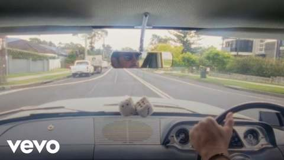
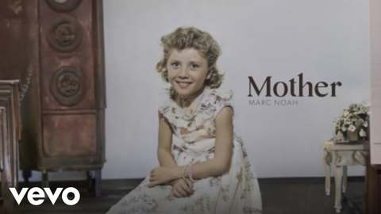
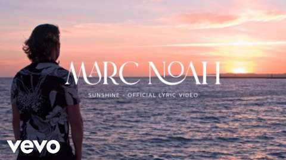
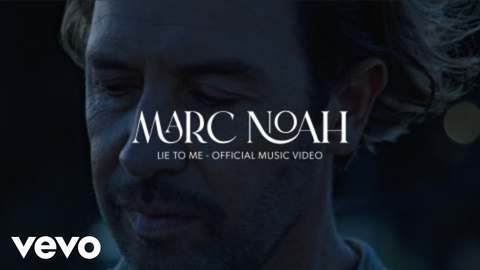
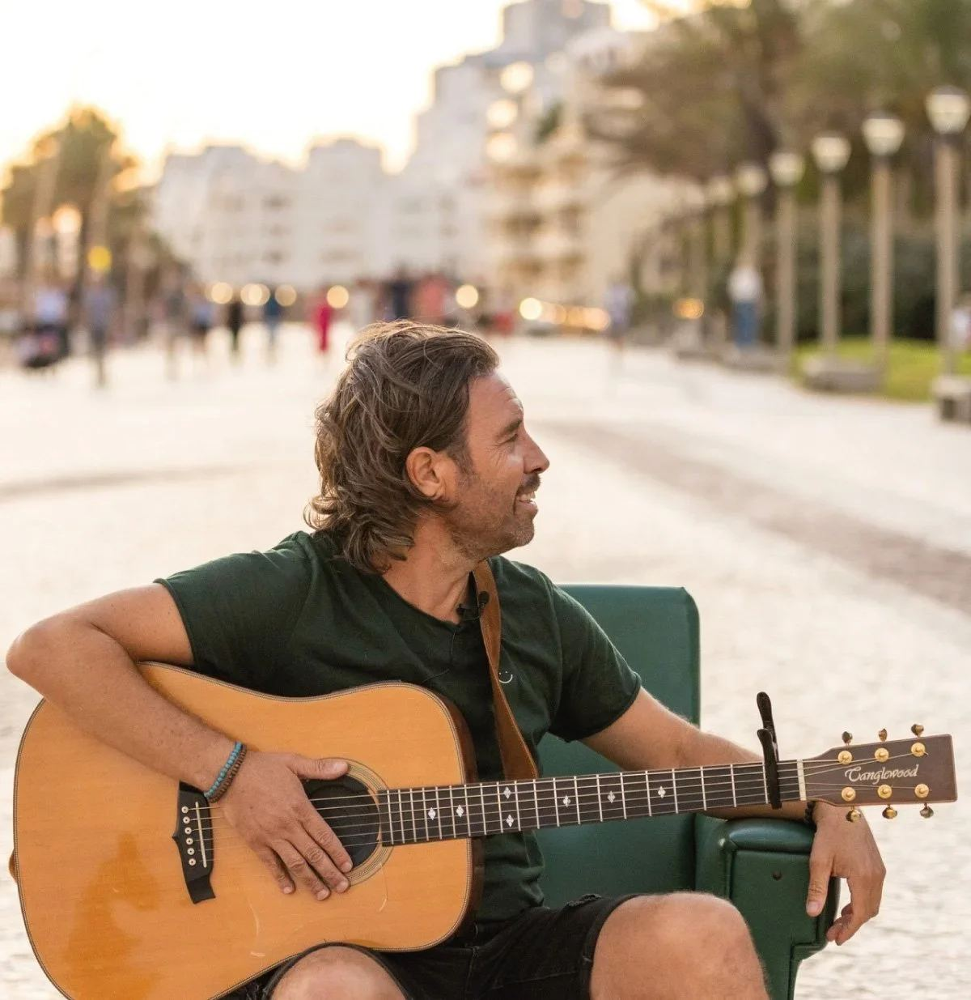

Singer-songwriter, Algarve
MarcNoah
He lives on the Algarve coast and writes the songs he sings.123
Watch him live with his bandChoque Frontal ao Vivo, Portimão, December 2023
Filmed by Alvor FM.4 Or choose: band, solo, sessions, videos
Watch
Watch him play
With his band, on his own, on a green chair around the Algarve, and in his videos. 21 films; each plays here when you press it.
Band · 75 min
With the band
6 musicians, 4 technical crew, indoor and outdoor, as his label lists the format.3 On film: a full set at the Teatro Municipal de Portimão, and Sons no Castelo in Loulé, August 2026.45
Solo · 60 min · duo 70 min
On his own
Voice and acoustic guitar: 1 musician, 2 technical crew, indoor; or as a duo.3 On film: the 9.º Festival Acústico, and a song-by-song set for Alvor FM. No duo film is listed yet.67
-

Play Roadtrip12 March 2025 - Play To The Bone Official Lyric Video12 June 2024
- Play Towers & Bridges4 November 2023
-

Play Mother, Official Lyric Video27 August 2023 -

Play Sunshine, Official Lyric Video5 May 2023 -

Play Lie to Me, Official Music Video4 March 2023 - Play Lie to Me, Official Lyric Video23 February 2023
Videos play from YouTube (youtube-nocookie.com) only when a visitor presses play. Official videos are on his label's Vevo channel; live videos are by Alvor FM, a radio station in Portimão, and on his own channel.9758 Captions and subtitles are YouTube's.

The composer, in his own words
My first album, Giant Little Victories, is a message of personal overcoming and of celebration.
O meu 1º álbum: "Giant Little Victories" é uma mensagem de superação pessoal e de celebração.
His label calls him a cantautor: he writes the songs he sings. His songs, it says, come from real episodes in a darker period of his life.3
His storyListen
Giant Little Victories
Take me, set me free, take me to a place where we can only be
His first album, eight songs, November 2024, on Epopeia Records, a label with an office in Faro.10113

- 01To The BoneLyric videoLive3:29
- 02Lie to Mesingle, February 202311VideoLyric videoLiveSofa3:43
- 03Towers and BridgesVideoLiveSofa3:11
- 04MotherLyric videoLiveSofa3:13
- 05Sunshinesingle, May 202311Lyric videoLiveSofa3:31
- 06Roadtripmost played in his label’s catalogue, March 202512Video3:37
- 07SlowtalkLive3:37
- 08No More Dreamingmost played in his label’s catalogue, April 202513Live3:25
Track order from Apple Music; under each song, its videos, live versions and sessions, each playing here.119 All the songs, the singles and the EP

Home
The Algarve
Marc Noah lives in the south of Portugal, in the Algarve. His own site names Quarteira, on the coast between Faro and Albufeira, and most of his concerts are in the towns around it.123

Live
On stage
40 concerts listed by his label, his own site and the press since October 2022 (our count), 26 of them in the Algarve.3151617181419202122232446252627
- Festival Emersivo, Loulé315
- Sons no Castelo, Alcaidaria do Castelo de Loulé, Loulé31617
- Festival Muralhas, Faro3
- Rock na Ribeira, Parque da Família, Pechão318
- Fortaleza de Sagres, opening the Fortaleza Cultural programme, Sagres19